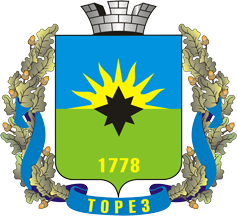

Торез - любимый город
На востоке Донецкой области находится город Торез, крупнейший горно-промышленный центр восточной части Донбасса. Это один из самых оживленных и стабильных шахтерских городов Украины, центр Торезской агломерации. Здесь имеется даже собственная телестудия. Через весь город проходит магистраль государственного значения, соединяющая Луганск и Донецк.
Первое поселение в этих местах появилось примерно в 1778 году (эта дата присутствует и на гербе города, считаясь датой основания). По берегам рек Орловой и Севастьяновки селились беглые крестьяне. Позже это поселение стало называться Алексеевкой. В 60-х годах XIX века здесь начинается добыча каменного угля, и поселок уже называется Чистяково (по фамилии владельца этих земель купца и промышленника Чистякова). Однако отдельные источники продолжали именовать его Леоново-Алексеево, в честь основателя. В частности, именно под таким названием поселок фигурирует в хрониках Гражданской войны - в окрестностях Леоново-Алексеево буденновцы из 6-й дивизии разбили дивизию генерала Маркова, устроив при этом настоящую резню.
Уже при советской власти, в 1932 году Чистяково получает статус города, но по производственным мощностям заметно уступает другим шахтерским городам. Именно поэтому Великая Отечественная война не нанесла городу серьезного ущерба - разрушать было особо нечего. В 1964 году город получает новое имя - Торез. В этом году умер Морис Торез, лидер французских коммунистов, потомственный шахтер. Помимо города его именем названы Институт иностранных языков в Москве, улицы и площади в других городах.
Сегодня Торез является промышленным и культурным центром региона, в городе более трех десятков памятников истории и культуры. В Торезе жил и работал Алексей Стаханов, сегодня в городе работает его дом-музей. Существует и мини-музей, посвященный Морису Торезу. В Торезе множество памятников и монументов, любимым место м отдыха жителей является Центральный городской парк имени 50-летия победы. религиозные учреждения города в последние годы были полностью отреставрированы.